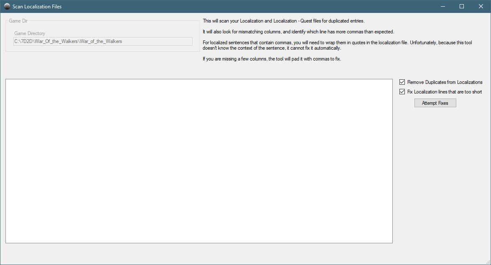
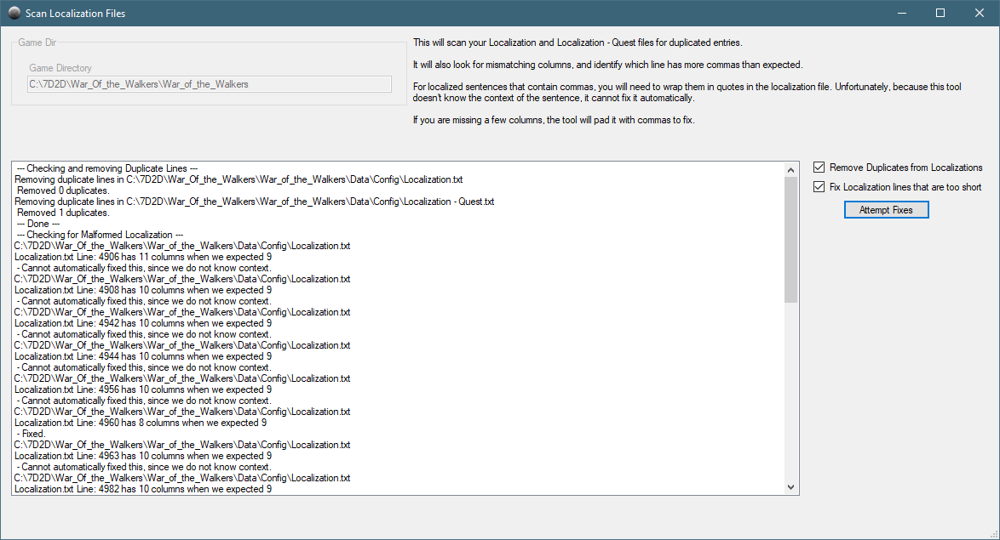
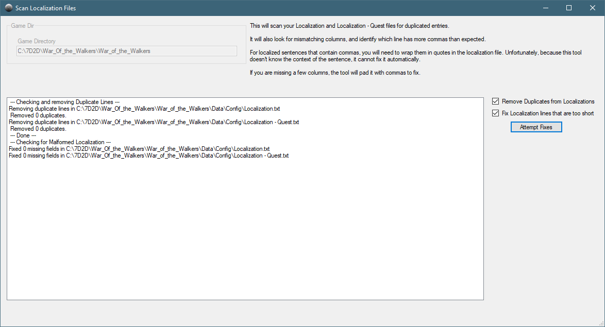

Because we are using a mod (War of the Walkers) for this part of the tutorial, you will want to run the Error Check Localization.

Click on the Error Check Localization file to open the Scan Localization Files screen.

Verify that the Game Directory is set correctly. If not, go back to the SDX Mod Helper main screen and change it there.
Click on the Attempt Fixes button.

It found a duplicate in the Localization - Quest.txt and removed it.
It did find some malformed entries in the Localization.txt file.
"Localization.txt Line 4905 has 11 columns when we expected 9"
This is one of the offending lines:
TungstenFragmentDesc,items,Item,KgNone,A advanced metal that can be used in the forge to make Tungsten Items,Un métal avancé qui peut être utilisé dans la forge pour faire des objets de tungstène,Ein vorgerücktes Metall, das in der Schmiede verwendet werden kann, um Wolfram-Einzelteile herzustellen,,Un metal avanzado que se puede utilizar en la fragua para hacer artículos de tungsteno
When we look closely at the file, we see this:
TungstenFragmentDesc,items,Item,KgNone,A advanced metal that can be used in the forge to make Tungsten Items,Un métal avancé qui peut être utilisé dans la forge pour faire des objets de tungstène,Ein vorgerücktes Metall, das in der Schmiede verwendet werden kann, um Wolfram-Einzelteile herzustellen,,Un metal avanzado que se puede utilizar en la fragua para hacer artículos de tungsteno
In this case, it's the German translation for TungstenFragment. Notice the commas with the space after it? This indicates that it should be wrapped around in quotes, as the commas are actually part of the sentence structure.
You will need to fix each of those individually.
The other localization error it picked up says this:
"Localilzation.txt Line: 4960 has 8 columns when we expected 9"
That means there is probably a missing comma. The SDX Mod Helper has padded this line with an extra comma (or more, depending on the number of missing commas).
After you have fixed the Localization file, re-run the Scan Localization Files.

Created with the Personal Edition of HelpNDoc: Write eBooks for the Kindle